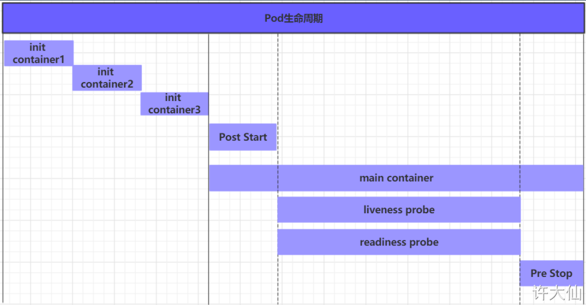
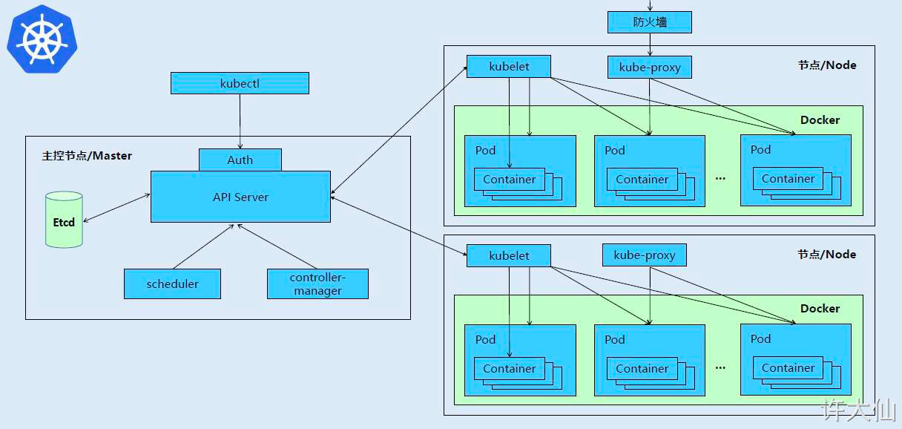

K8S学习笔记（七）- K8S Pod详解 - Pod的生命周期
概述
我们一般将Pod对象从创建到终止的这段时间范围称为Pod的生命周期，它主要包含下面的过程：
- Pod创建过程。
- 运行初始化容器（init container）过程
- 运行主容器（main container）
- 容器启动后钩子（post start）、容器终止前钩子（pre stop）
- 容器的存活性探测（liveness probe）、就绪性探测（readiness probe）
- Pod终止过程

在整个生命周期中，Pod会出现5种状态（相位），分别如下：
- 挂起（Pending）：API Server已经创建了Pod资源对象，但它尚未被调度完成或者仍处于下载镜像的过程中。
- 运行中（Running）：Pod已经被调度到某节点，并且所有容器都已经被kubelet创建完成。
- 成功（Succeeded）：Pod中的所有容器都已经成功终止并且不会被重启。
- 失败（Failed）：所有容器都已经终止，但至少有一个容器终止失败，即容器返回了非0值的退出状态。
- 未知（Unknown）：API Server无法正常获取到Pod对象的状态信息，通常由于网络通信失败所导致。
创建和终止
Pod的创建过程

- ① 用户通过kubectl或其他的api客户端提交需要创建的Pod信息给API Server。
- ② API Server开始生成Pod对象的信息，并将信息存入etcd，然后返回确认信息至客户端。
- ③ API Server开始反映etcd中的Pod对象的变化，其它组件使用watch机制来跟踪检查API Server上的变动。
- ④ Scheduler发现有新的Pod对象要创建，开始为Pod分配主机并将结果信息更新至API Server。
- ⑤ Node节点上的kubelet发现有Pod调度过来，尝试调度Docker启动容器，并将结果回送至API Server。
- ⑥ API Server将接收到的Pod状态信息存入到etcd中。
Pod的终止过程
- ① 用户向API Server发送删除Pod对象的命令。
- ② API Server中的Pod对象信息会随着时间的推移而更新，在宽限期内（默认30s），Pod被视为dead。
- ③ 将Pod标记为terminating状态。
- ④ kubelete在监控到Pod对象转为terminating状态的同时启动Pod关闭过程。
- ⑤ 端点控制器监控到Pod对象的关闭行为时将其从所有匹配到此端点的service资源的端点列表中移除。
- ⑥ 如果当前Pod对象定义了preStop钩子处理器，则在其标记为terminating后会以同步的方式启动执行。
- ⑦ Pod对象中的容器进程收到停止信号。
- ⑧ 宽限期结束后，如果Pod中还存在运行的进程，那么Pod对象会收到立即终止的信号。
- ⑨ kubectl请求API Server将此Pod资源的宽限期设置为0从而完成删除操作，此时Pod对于用户已经不可用了。
初始化容器
- 初始化容器是在Pod的主容器启动之前要运行的容器，主要是做一些主容器的前置工作，它具有两大特征：
- ① 初始化容器必须运行完成直至结束，如果某个初始化容器运行失败，那么kubernetes需要重启它直至成功完成。
- ② 初始化容器必须按照定义的顺序执行，当且仅当前一个成功之后，后面的一个才能运行。
- 初始化容器有很多的应用场景，下面列出的是最常见的几个：
- ① 提供主容器镜像中不具备的工具程序或自定义代码。
- ② 初始化容器要先于应用容器串行启动并运行完成，因此可用于延后应用容器的启动直至其依赖的条件得到满足。
接下来做一个案例，模拟下面这个需求：
- 假设要以主容器来运行Nginx，但是要求在运行Nginx之前要能够连接上MySQL和Redis所在的服务器。
- 为了简化测试，事先规定好MySQL和Redis所在的IP地址分别为192.168.18.103和192.168.18.104（注意，这两个IP都不能ping通，因为环境中没有这两个IP）。
创建pod-initcontainer.yaml文件
1 | apiVersion: v1 |
1 | 创建pod |
钩子函数
钩子函数能够感知自身生命周期中的事件，并在相应的时刻到来时运行用户指定的程序代码。
kubernetes在主容器启动之后和停止之前提供了两个钩子函数：
- post start：容器创建之后执行，如果失败会重启容器。
- pre stop：容器终止之前执行，执行完成之后容器将成功终止，在其完成之前会阻塞删除容器的操作。
钩子处理器支持使用下面的三种方式定义动作：
- ① exec命令：在容器内执行一次命令
1
2
3
4
5
6
7
8……
lifecycle:
postStart:
exec:
command:
- cat
- /tmp/healthy
…… - ② tcpSocket：在当前容器尝试访问指定的socket
1
2
3
4
5
6……
lifecycle:
postStart:
tcpSocket:
port: 8080
…… - ③ httpGet：在当前容器中向某url发起HTTP请求接下来，以exec方式为例，演示下钩子函数的使用，创建pod-hook-exec.yaml文件，内容如下：
1
2
3
4
5
6
7
8
9……
lifecycle:
postStart:
httpGet:
path: / #URI地址
port: 80 #端口号
host: 192.168.109.100 #主机地址
scheme: HTTP #支持的协议，http或者https
……1
2
3
4
5
6
7
8
9
10
11
12
13
14
15
16
17
18
19
20
21
22
23
24
25
26
27
28apiVersion: v1
kind: Pod
metadata:
name: pod-hook-exec
namespace: dev
spec:
containers: # 容器配置
- name: nginx
image: nginx:1.17.1
imagePullPolicy: IfNotPresent
ports:
- name: nginx-port
containerPort: 80
protocol: TCP
resources:
limits:
cpu: "2"
memory: "10Gi"
requests:
cpu: "1"
memory: "10Mi"
lifecycle: # 生命周期配置
postStart: # 容器创建之后执行，如果失败会重启容器
exec: # 在容器启动的时候，执行一条命令，修改掉Nginx的首页内容
command: ["/bin/sh","-c","echo postStart ... > /usr/share/nginx/html/index.html"]
preStop: # 容器终止之前执行，执行完成之后容器将成功终止，在其完成之前会阻塞删除容器的操作
exec: # 在容器停止之前停止Nginx的服务
command: ["/usr/sbin/nginx","-s","quit"]
1 | kubectl create -f pod-hook-exec.yaml |
容器探针
概述
livenessProbe：存活性探测，决定是否重启容器。
readinessProbe：就绪性探测，决定是否将请求转发给容器。
k8s在1.16版本之后新增了startupProbe探针，用于判断容器内应用程序是否已经启动。
如果配置了startupProbe探针，就会先禁止其他的探针，直到startupProbe探针成功为止，一旦成功将不再进行探测。
容器探测用于检测容器中的应用实例是否正常工作，是保障业务可用性的一种传统机制。如果经过探测，实例的状态不符合预期，那么kubernetes就会把该问题实例“摘除”，不承担业务流量。kubernetes提供了两种探针来实现容器探测，分别是：
- liveness probes：存活性探测，用于检测应用实例当前是否处于正常运行状态，如果不是，k8s会重启容器。
- readiness probes：就绪性探测，用于检测应用实例是否可以接受请求，如果不能，k8s不会转发流量。
上面两种探针目前均支持三种探测方式：
- ① exec命令：在容器内执行一次命令，如果命令执行的退出码为0，则认为程序正常，否则不正常
1
2
3
4
5
6
7……
livenessProbe:
exec:
command:
- cat
- /tmp/healthy
…… - ② tcpSocket：将会尝试访问一个用户容器的端口，如果能够建立这条连接，则认为程序正常，否则不正常
1
2
3
4
5……
livenessProbe:
tcpSocket:
port: 8080
…… - ③ httpGet：调用容器内web应用的URL，如果返回的状态码在200和399之前，则认为程序正常，否则不正常
1
2
3
4
5
6
7
8……
livenessProbe:
httpGet:
path: / #URI地址
port: 80 #端口号
host: 127.0.0.1 #主机地址
scheme: HTTP #支持的协议，http或者https
……
exec方式
创建pod-liveness-exec.yaml文件
1 | apiVersion: v1 |
1 | kubectl create -f pod-liveness-exec.yaml |
观察上面 describe 的信息就会发现nginx容器启动之后就进行了健康检查。
检查失败之后，容器被kill掉，然后尝试进行重启，这是重启策略的作用。
稍等一会之后，再观察Pod的信息，就会看到RESTARTS不再是0，而是一直增长。
tcpSocket方式
创建pod-liveness-tcpsocket.yaml文件
1 | apiVersion: v1 |
httpGet方式
创建pod-liveness-httpget.yaml文件
1 | apiVersion: v1 |
容器探测的补充
上面已经使用了livenessProbe演示了三种探测方式，但是查看livenessProbe的子属性，会发现除了这三种方式，还有一些其他的配置。
1 | kubectl explain pod.spec.containers.livenessProbe |
FIELDS:
exec
tcpSocket
httpGet
initialDelaySeconds # 容器启动后等待多少秒执行第一次探测
timeoutSeconds # 探测超时时间。默认1秒，最小1秒
periodSeconds # 执行探测的频率。默认是10秒，最小1秒
failureThreshold # 连续探测失败多少次才被认定为失败。默认是3。最小值是1
successThreshold # 连续探测成功多少次才被认定为成功。默认是1
重启策略
在容器探测中，一旦容器探测出现了问题，kubernetes就会对容器所在的Pod进行重启，其实这是由Pod的重启策略决定的，Pod的重启策略有3种，分别如下：
- Always：容器失效时，自动重启该容器，默认值。
- OnFailure：容器终止运行且退出码不为0时重启。
- Never：不论状态如何，都不重启该容器。
重启策略适用于Pod对象中的所有容器，首次需要重启的容器，将在其需要的时候立即进行重启，
随后再次重启的操作将由kubelet延迟一段时间后进行，且反复的重启操作的延迟时长以此为10s、20s、40s、80s、160s和300s，300s是最大的延迟时长。
创建pod-restart-policy.yaml文件，内容如下：
1 | apiVersion: v1 |
1 | kubectl create -f pod-restart-policy.yaml |